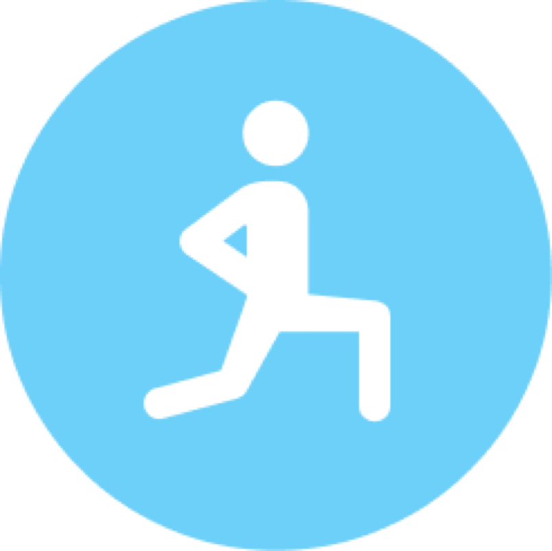

Selected Work
SmartStretch
A connected rehabilitation service — from wearable strain and sEMG sensors, through a real-time watchOS exercise app, to a clinician-facing EHR extension embedded in WebPT. Service design, interaction design, and a working prototype.
→
Weighted Keyboard
Hall effect sensor to MIDI pipeline with force-displacement curve tuning. 17 years of piano training made rigorous through engineering methodology.
→
Audit Trail
Interactive traceability tool for LA homelessness spending data. Transparency isn't publishing reports — it's making spending traceable throughout its lifecycle.
→ML5.js Inventory System
Three-layer CV architecture — COCO-SSD detection, Teachable Machine classification, and centroid tracking for persistent object identity across frames.
External ↗ Generative · P5.js · PerformanceFlow Field
Real-time generative system with curl noise and vortex dynamics. ~8,000 particles, color mapped to radius of curvature, performance optimized with flat arrays.
External ↗